Bias versus sampling error as the two jobs of a design: controls, randomization and blinding against bias; replication, balance and blocking against sampling error. Natural versus manipulative experiments, press and pulse designs, sampling layouts, BACI, and how each design maps onto the analysis we will run later.
Author
Bill Perry
Where We Left Off
Covered last time:
Type I and Type II error, and the decision table
Power — the chance of detecting an effect that is really there
A priori power to plan a study, retrospective power to plan the next one
Pairing our four trees took the study from needing 88 trees to needing 7
Note
✅ Key idea from last lecture
Power is a property of a design, not of a test. Last time we measured it. Today we build the thing being measured — and we do it before any data exist.
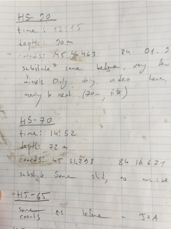
Today’s Overview
One idea organizes the whole lecture:
A design has exactly two jobs — get rid of bias, and shrink sampling error. Every technique today does one or the other.
Bias → controls, randomization, blinding
Sampling error → replication, balance, blocking
Then: sampling layouts in the field, and which analysis each design leads to
Note
📖 Reading
Whitlock & Schluter, Ch. 14 — Designing Experiments (§14.4 is bias, §14.5 is sampling error) and Ch. 1 — Statistics and Samples. Gotelli & Ellison, Ch. 6 — Designing Successful Field Studies, and Ch. 7 — A Bestiary of Experimental and Sampling Designs.
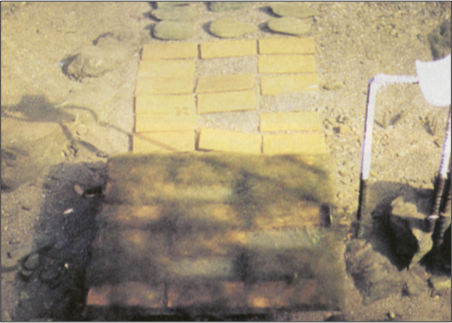
Lamberti and Resh 1983
🗳️ How Today Works
Warning
🗳️ Five times today, you make the call
Five slides are marked 🗳️ DECIDE. Each one asks a multiple-choice question and I will not tell you the answer on that slide.
How it works: write your letter down — actually write it — then hold up fingers 1–4. If the room splits, turn to the person next to you, argue for ninety seconds, and we vote again. Nothing here is graded. The point is that you commit before you find out.
Part 1 · Bias and Sampling Error
The Two Ways an Estimate Goes Wrong
Your study produces an estimate. It can miss the truth two different ways:
Bias — your estimate is centred on the wrong value. Collect more data and you converge, confidently, on the wrong answer.
Sampling error — your estimate is centred on the right value but bounces around it. Collect more data and it tightens up.
This distinction is the whole lecture, because the two problems have completely different cures:
Important
⚠️ Why this matters more than any test
A p-value describes sampling error only. No statistical test can detect bias in your own design. That is why design comes first.
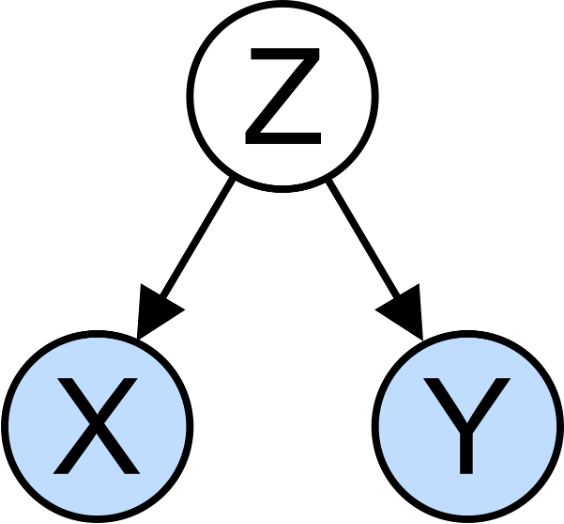
A confounder is a bias machine: it moves the estimate off the truth, and it does not care how many samples you take.
Problem
Gets worse with
Cured by
Bias
nothing — more data does not help
controls, randomization, blinding
Sampling error
small n, high variance
replication, balance, blocking
Start From the Question
Before either job, one question: what is your research question?
Gotelli & Ellison’s four canonical forms:
Spatial or temporal pattern in Y?
Effect of factor X on Y?
Are values of Y consistent with hypothesis H?
What is the best estimate of parameter θ?
Each one implies a different design. “I will go measure some things and see what turns up” implies none of them.
Note
📖 Reference
Gotelli & Ellison, Ch. 6 — Designing Successful Field Studies.
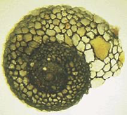
Part 2 · Causality and the Inference Gradient
The Design Carries the Causal Claim
Statistics has no test for causality. The design carries the causal claim; the analysis just reports numbers. Strength of inference runs on a gradient, and what moves you up it is control of confounding:
Observational field study — weak
Field study with measured covariates
Randomized, controlled experiment — strong
Our running example, all day: on small islands, does lizard predation control spider density?
Warning
⚠️ The same regression, three different claims
lm(spiders ~ lizards) returns the identical output at all three levels. What changes is what you are entitled to say about it.
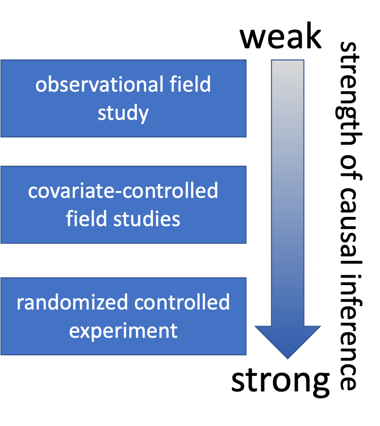
Part 3 · Natural and Manipulative Experiments
Natural Experiments
Not experiments at all — you use natural variation in the predictor. Survey plots across an existing gradient of lizard density.
What you gain: real scale, real systems, long time spans, questions you could never manipulate.
What you give up:
Direction of causation is not identified — lizards may eat spiders, or spiders may feed lizards
Uncontrolled variables ride along with the predictor
Note
📖 Reference
Whitlock & Schluter §14.7 — “What if you can’t do experiments?” — is exactly this problem, and covers matching and adjusting for covariates as the two partial fixes.
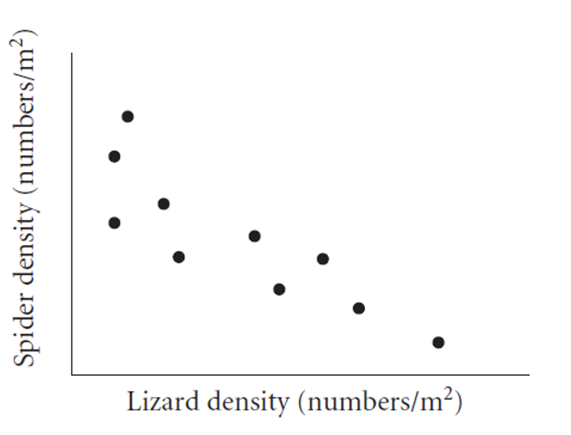
🗳️ DECIDE · You Are the Reviewer
A manuscript lands on your desk. The authors surveyed 40 island plots and report that spider density falls as lizard density rises. They did not measure moisture.
You know that moisture is related to both lizards and spiders on these islands.
Your review says the authors must:
(a) Control for moisture — it is a confounder, and failing to control for it invalidates the result
(b) Not control for moisture — doing so could erase the very effect they are measuring
(c) Nothing yet — you cannot tell which advice is right from the data alone
(d) Control for moisture and report the uncontrolled result, letting readers choose
Warning
✍️ Write your letter down, then vote.
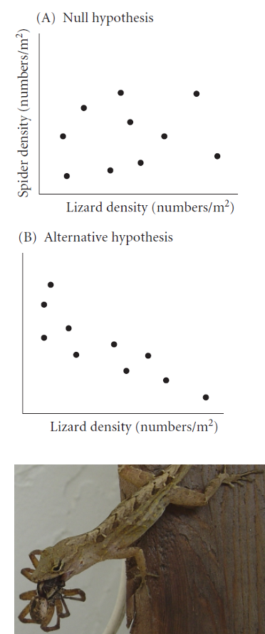
The Answer · Confounder or Mediator?
Important
✅ The answer is (c) — and this is the uncomfortable part of observational work.
If moisture drives lizards and spiders independently, it is a confounder and (a) is right. If moisture drives lizards, which then eat spiders, it is a mediator on the causal path — and controlling for it deletes the effect, so (b) is right.
The data cannot distinguish these two. The arrows come from the biology, not from the numbers. Anyone who tells you “always control for everything you measured” is wrong.
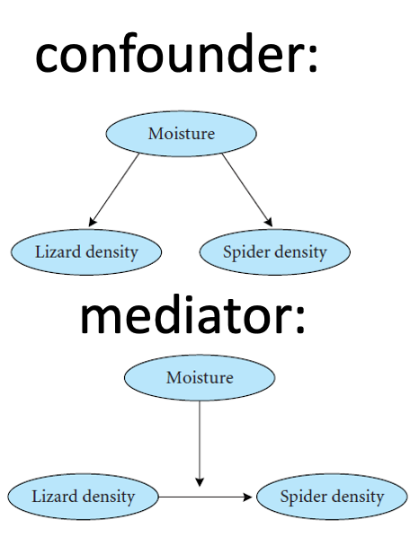
Strengthening a Natural Experiment
You cannot randomize, so you attack confounding directly:
Reduce it — choose plots that are alike in everything except lizard density (this is matching)
Adjust for it — measure the covariates and put them in the model
Name it — you cannot adjust for a confounder you never wrote down
Know which one you have — the diagrams on the right are the whole distinction:
A confounder drives both X and Y — adjust for it
A mediator sits on the path X → M → Y — adjusting for it removes the effect you came to measure
Manipulative Experiments
You set the predictor yourself and measure the response. Randomized and controlled, this is the strongest design available.
What it costs you — Gotelli & Ellison’s trade-offs:
Scale for replication — replicable plots are small plots
Organism for tractability — small, short-lived species
Treatments for replication — every extra treatment level costs replicates
Four numbers. Nothing else is on this slide on purpose.
🗳️ DECIDE · You Are Writing the Abstract
Those four means are all the evidence you have. You now have to write the one sentence of the abstract that states what you found.
Which claim do these data support?
(a) Both sponge species increase mangrove root growth
(b) Only Tedania increases root growth; Haliclona does not
(c) We cannot tell whether the sponges do anything
(d) The sponges have no effect on root growth
Warning
✍️ Write your letter down before you look at the next slide.
Then argue it with your neighbour. Everyone in this room has enough information to get this right.
Treatment
Growth (mm/d)
Control
0.33
Foam
0.71
Haliclona
0.77
Tedania
0.91
Note
Remember what Foamis: a piece of inert plastic. It is not alive and it is not a sponge.
The Sponge Result, in Two Tests
# Is there an artifact of having ANYTHING attached?sponge_df %>%filter(treatment %in%c("Control", "Foam")) %>%t.test(growth_mm_d ~ treatment, data = .)
Welch Two Sample t-test
data: growth_mm_d by treatment
t = -2.4537, df = 25.775, p-value = 0.02122
alternative hypothesis: true difference in means between group Control and group Foam is not equal to 0
95 percent confidence interval:
-0.70372014 -0.06199415
sample estimates:
mean in group Control mean in group Foam
0.3292857 0.7121429
# Do the living sponges beat the inert foam?sponge_df %>%filter(treatment !="Control") %>%mutate(kind =if_else(treatment =="Foam", "sham", "sponge")) %>%t.test(growth_mm_d ~ kind, data = .)
Welch Two Sample t-test
data: growth_mm_d by kind
t = -0.98461, df = 26.362, p-value = 0.3338
alternative hypothesis: true difference in means between group sham and group sponge is not equal to 0
95 percent confidence interval:
-0.3923957 0.1381100
sample estimates:
mean in group sham mean in group sponge
0.7121429 0.8392857
✅ What the Two Sponge Tests Show
Important
✅ The answer is (c). Most rooms vote (a).
Control vs Foam: p = 0.021 — a piece of inert plastic significantly increases root growth
Foam vs sponges: p = 0.33 — the living sponges add nothing detectable on top of that
The sponges sit higher than the bare control, so (a) feels obvious. But the right comparison is not against nothing — it is against an object that is not a sponge, and against that, the sponges do not measurably win.
Warning
⚠️ The paper you would have written without the foam
“Sponges promote mangrove root growth” — real p-value, clean figure, wrong conclusion. The effect is mostly having something attached to your root.
A sham control is what stands between a correct result and a confident wrong one.
Randomization
Randomization is how you deconfound the variables you never thought of. It works at two levels, and both matter:
Selection — which units enter the study. Makes the sample represent the population.
Assignment — which unit gets which treatment. Makes the groups exchangeable before treatment.
Haphazard is not random. “Whichever tree I reached first” correlates with trail access, which correlates with light, soil and disturbance.
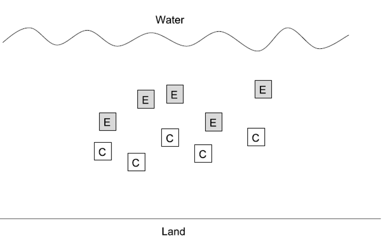
Randomizing Both Levels in R
# Selection: 10 trees from the 100 in the standselected <-sample(1:100, 10)# Assignment: 5 to treatment, the rest to controltreated <-sample(selected, 5)tibble(tree = selected,group =if_else(tree %in% treated, "treatment", "control")) %>%arrange(group)
# A tibble: 10 × 2
tree group
<int> <chr>
1 49 control
2 100 control
3 47 control
4 71 control
5 89 control
6 65 treatment
7 25 treatment
8 74 treatment
9 18 treatment
10 24 treatment
Tip
🖐 set.seed() makes it reproducible, not less random
Record the seed and anyone can reconstruct exactly which trees you assigned where.
Blinding
The measurer’s expectations leak into the measurements. This is a bias, so no amount of data fixes it.
Single-blind — the subject does not know the treatment
Double-blind — the person measuring does not know either
A placebo is what makes subject-blinding possible at all
W&S spend most of Ch. 14’s opening on this because medicine learned it the hard way. Ecology mostly has not.
Important
⚠️ This lands on our own study
You measured needles knowing which side of the tree they came from, and knowing the hypothesis. Nobody cheated. But “is this needle bent or straight, include it or not” is a judgement call, and judgement calls drift toward the expected answer.
The fix is cheap: someone relabels the envelopes, you measure blind to side.
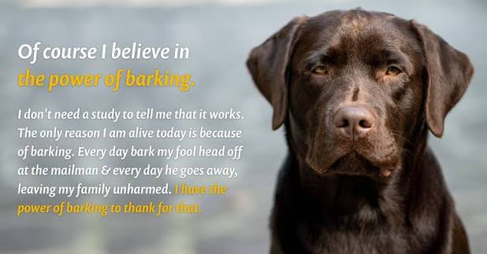
Expectation is a powerful thing.
Part 5 · Job Two: Shrinking Sampling Error
Replication — and at What Scale
Replication does two jobs: it shrinks the standard error, and it is the only way to estimate variability at all.
The hard part is never how many. It is of what.
Warning
⚠️ The rule
Replicates must vary at the scale your hypothesis applies to. Anything finer is pseudoreplication (Hurlbert 1984): it shrinks your SE without adding information — a bias dressed as precision.
The next slide gives you three studies. Every one of them has been published in roughly this form.
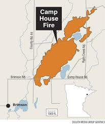
🗳️ DECIDE · What Is n?
Write down the true number of replicates per group for each study. Three numbers.
1. Fire and soil invertebrates. 20 soil cores from the burnt part of a forest, 20 from the unburnt part of the same forest. (a) 20 (b) 2 (c) 1
2. Copper and barnacle settlement. 2 aquaria — one with copper, one without. 5 settling plates in each. (a) 10 (b) 5 (c) 2 (d) 1
3. Sewage and water quality. 10 water samples collected above the outfall, 10 below it. (a) 20 (b) 10 (c) 1
Warning
✍️ Three letters, written down, before you vote.
Number 3 is the one to argue about.
Note
The question to ask each time
“What is the smallest thing I could have independently assigned or independently chosen?”
Count those. Not the measurements.
What n Actually Was
Important
1. Fire → (c) n = 1 per group. One burnt area, one unburnt area. The 20 cores describe that forest and support no claim about fire in general. To study fire you need several burnt and several unburnt forests.
2. Copper → (d) n = 1 per group. One aquarium per treatment. The 5 plates share water, temperature, and whatever went wrong in that tank. You need several aquaria per treatment.
3. Sewage → (c) n = 1 per group. This is the one that catches everybody. There is one upstream location and one downstream location. Ten samples from one place is ten measurements of one place.
In all three, the published version reported the bigger number — and a satisfyingly small p-value.
Warning
⚠️ What pseudoreplication does and does not do
It barely moves your means. It shrinks your standard error. So the estimate stays put while the uncertainty around it quietly collapses.
That is why it is so hard to catch by eye, and why no diagnostic plot will flag it. Only the design will.
You will do exactly this to a real dataset for homework — and get the opposite answer from the obvious one.
We Already Fixed This Once
Our own pine data has 64 rows and 8 trees’ worth of sides — 4 trees, two sides each.
Every analysis we have run since Week 4 starts by averaging the 8 needles per side away:
p_df
# A tibble: 8 × 3
team side needle_length_mm
<chr> <chr> <dbl>
1 botany shady 16.1
2 botany sunny 17.3
3 grace_jace shady 15.4
4 grace_jace sunny 15.5
5 one shady 13.2
6 one sunny 14.2
7 waterbugs shady 11.7
8 waterbugs sunny 13.8
That group_by() %>% summarise() is not data cleaning. It is the line where we choose the tree as the experimental unit, because the tree is what the hypothesis is about.
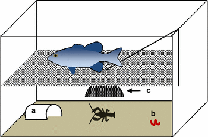
One tank, many measurements, n = 1.
Balance
For a fixed total effort, equal group sizes give the smallest standard error on the difference.
10 and 10 beats 15 and 5, using the same 20 units
Balance also makes the tests robust: unequal variances hurt far less when n is equal
Unbalanced designs are harder to interpret in ANOVA — sums of squares stop being unique (we will hit this in Week 9)
Tip
🖐 When imbalance is not your fault
Mortality, lost plots and weather happen. Balance is a design goal, not a moral requirement — but plan for balance, and report what you actually ended up with.
Note
📖 Reference
Whitlock & Schluter §14.5 — reducing the influence of sampling error: replication, balance, blocking, and choosing extreme treatment levels.
Note
Extreme treatments
If you want to detect a dose response with few replicates, spread your doses wide. Four doses clustered near the middle waste your replicates on a range where nothing happens.
Independence and Autocorrelation
Most tests assume observations are independent — knowing one tells you nothing about another. Autocorrelation is the standard violation: things near each other in space or time resemble each other. Samples 1 m apart are not two independent samples; consecutive days are not independent days; offspring of one mother are not independent of each other.
You have two options, and only two: space your samples beyond the correlation range, or model it (Week 10 onward).
Or — you stop fighting it and use it.
Blocking, and Our Paired Design
Blocking: group units into sets that are alike, then randomize treatments within each set. Variation among blocks leaves the comparison instead of contaminating it.
Chambers differ? Run every temperature in every chamber — block by chamber
Days differ? Run all treatments each day — block by time
Ridiculously variable sites? Put all treatments at each site
Important
✅ A paired design is a block of size two
Two sides of the same tree share genotype, soil, age and history. Pairing removes all of it from the comparison. That is why 7 trees do the work of 88.
Non-independence you ignore costs you. Non-independence you plan for pays you. Blocking is how you get paid.
Blocked designs need blocked analyses — Week 9 and Week 10.
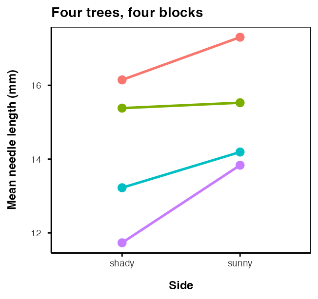
Every tree slopes the same way. The trees sit at different heights. Blocking keeps the slope and throws away the heights.
Part 6 · Sampling Layouts in the Field
Simple Random and Stratified
Simple random — every unit has an equal chance of selection. Number the units, draw with a random number generator.
What nearly every test assumes you did
Genuinely awkward in the field; haphazard is the common substitute, and it is not the same thing
Stratified — if the population has distinct strata, sample each one separately, with n proportional to stratum size.
More precise than simple random when strata differ, because within-stratum variance is all that is left
Strata must go into the model, not be ignored
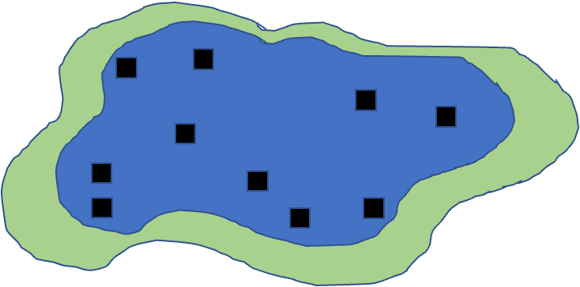
Simple random
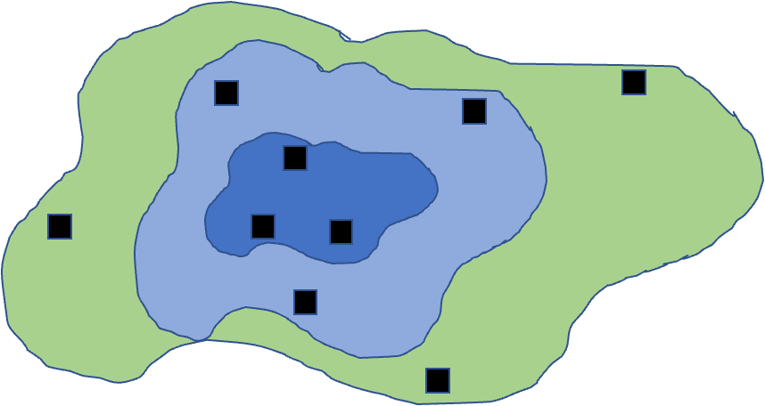
Stratified
Cluster and Systematic
Cluster — sample subunits nested inside larger units. Used when travel or access makes anything else impossible.
Cheap, and less precise than simple random for the same total n
The clusters are your replicates → nested ANOVA (Week 9) or a mixed model (Week 10)
Systematic — units evenly spaced; the transect is the ecological classic.
Ideal for describing change along a gradient
One real risk: your spacing lines up with a periodicity in the system
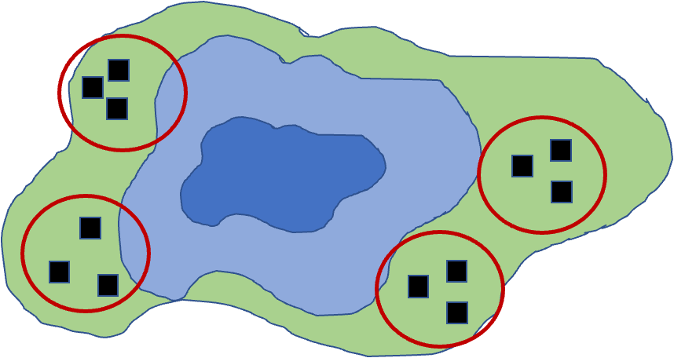
Cluster
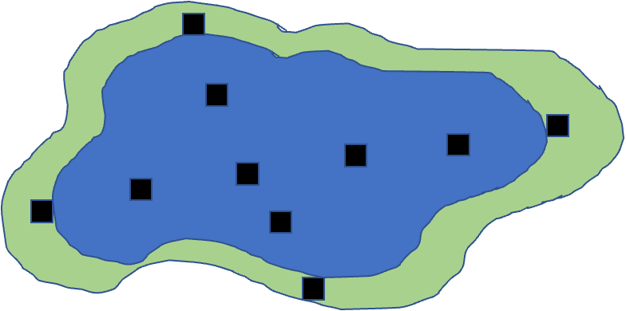
Systematic
🗳️ DECIDE · Where Do You Spend the Money?
A published study compares a heavily visited tidepool beach with a restricted, no-access beach. Invertebrate densities are lower, and 78.2% of boulders are disturbed at the visited beach versus 1.8% at the restricted one. Sampled once, this year.
You inherit this project with funding for exactly one more sampling campaign. You want to claim that visitors reduce invertebrate density.
Where do you spend it?
(a) More quadrats at both beaches — tighten the estimates you already have
(b) Add a third, intermediate-use beach — get a gradient
(c) Re-sample both beaches next year — get a time series
(d) No campaign can rescue this claim
Warning
✍️ One letter. Write it down.
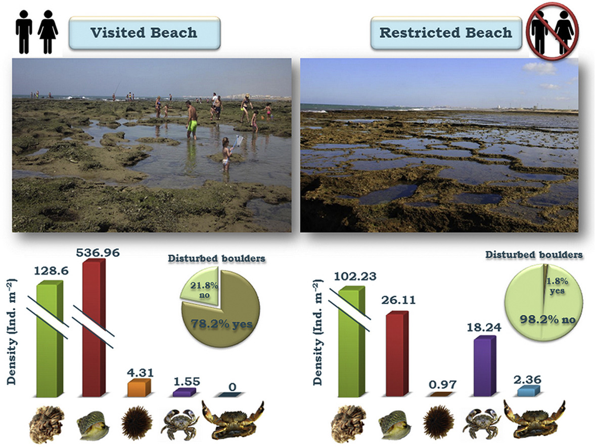
BACI — When You Cannot Randomize an Impact
Important
✅ The answer is (d), and it is meant to be unsatisfying.
The two beaches may always have differed — in exposure, substrate, or wave energy — which is very likely why one became popular and one became restricted. You cannot add a “before” retroactively.
(a) buys precision on a biased estimate
(b) adds more sites confounded the same way
(c) is the closest to useful, and it still has no pre-impact baseline
Before–After–Control–Impact is the design you needed:
Measure before and after, at both an impact and a control site
The evidence is the interaction — did impact-versus-control change from before to after?
Before/after alone confounds impact with time. Control/impact alone confounds it with place. You need both.
Note
Why this matters beyond tidepools
Nobody randomizes an oil spill, a dam, a clearcut or a hurricane. BACI is how environmental impact assessment is supposed to work — and the reason baseline monitoring has value long before anyone knows what will hit.
BACI is a factorial design with an interaction → Week 9.
Part 7 · Sample Size Is a Design Decision
How Big, Decided Before You Start
We did the mechanics last lecture. The design point is the one worth keeping:
Power rises with the effect size, with √n, and with α — and falls as σ rises
Type II error is β. Power is 1 − β.
Two ways to run it a priori: solve for the n you need, or for the effect size your affordable n could detect
# Our pine pilot, unpaired vs paired — same trees, same needlespwr.t.test(d = d_paired, power =0.80,sig.level =0.05, type ="paired")$n
[1] 6.406838
44 trees per side (88 total) unpaired, versus 7 trees paired. Nothing changed but the design.
Note
Plan for precision, not just for power
W&S §14.6 frames this as planning the width of your confidence interval. “How precise will my estimate be?” is often the more honest question than “will I get a star?”
Important
⚠️ Retrospective power, one more time
Computing power from the effect size you observed re-expresses your p-value and tells you nothing new. Use it to plan the next study. To argue for no effect, use an equivalence test or a CI that excludes anything meaningful.
The Two Ways to Buy Power
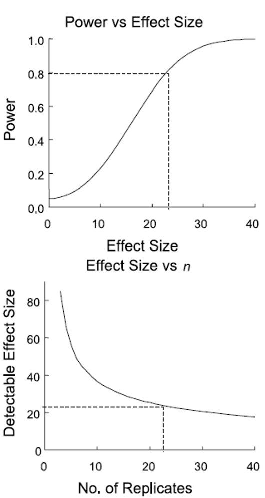
Note
Same two levers, two views
Power climbs with the effect size you are chasing, and the detectable effect size falls as you add replicates. You choose one of them before the study; the other is then decided for you.
Part 8 · From Design to Analysis
🗳️ DECIDE · Match the Design to the Analysis
With your neighbour. Five designs. For each, name the analysis — from the list on the right — that it forces you into. You have met all five.
1. Needle length measured on 40 trees, along with the light reaching each tree, in lux.
2. Sea urchin grazing measured on 4 patches inside each of 16 reefs.
This is Gotelli & Ellison Ch. 7’s whole point, and it is also the rest of this course. Write the design down and the analysis is already decided:
Your design
The analysis
When
One continuous predictor
Regression
Week 6
Several continuous predictors
Multiple regression
Week 7
One categorical factor
One-way ANOVA
Week 8
Two crossed factors, or BACI
Two-way ANOVA + interaction
Week 9
Subsamples inside units; clusters
Nested ANOVA
Week 9
Blocks, repeated measures, split-plot
Mixed model
Week 10
Counts, or presence/absence
GLM
Week 11
Factor plus a continuous covariate
ANCOVA
Week 12
Important
You cannot choose your analysis at the end
You chose it the day you decided what to measure and how to lay it out. Everything after that is bookkeeping.
Summary
A design has two jobs: kill bias, shrink sampling error. No test does either for you.
Bias → controls (usually more than one), randomization at both levels, blinding.
Sampling error → replication at the right scale, balance, blocking.
Natural experiments buy realism with causal ambiguity; manipulations buy inference with scale. Press or pulse, snapshot or trajectory — choose deliberately.
Replicate the thing your hypothesis is about. Pseudoreplication buys false precision.
Your design has already chosen your analysis.
Important
The sponge slide, if you remember nothing else
The inert foam grew roots almost as well as the living sponges. Without that sham control, the paper reports a sponge effect — correctly analysed, properly significant, and wrong.
Design is not the paperwork before the science. It is the science.
🗳️ One Last Decision — On Your Way Out
Warning
🗳️ One last decision — on your way out
On a scrap of paper, unsigned:
What is the single biggest threat to the validity of our own pine needle study — and what one change would you make to next year’s collection?
One sentence each. Hand it to me at the door.
Readings
Whitlock & Schluter, Ch. 14 — Designing Experiments (§14.4 bias; §14.5 sampling error; §14.6 planning for precision; §14.7 observational studies), and Ch. 1 — Statistics and Samples.
Gotelli & Ellison, Ch. 6 — Designing Successful Field Studies, and Ch. 7 — A Bestiary of Experimental and Sampling Designs.
Hurlbert, S. H. (1984). Pseudoreplication and the design of ecological field experiments. Ecological Monographs, 54(2), 187–211.
Ellison, A. M., Farnsworth, E. J., & Twilley, R. R. (1996). Facultative mutualism between red mangroves and root-fouling sponges in Belizean mangal. Ecology, 77(8), 2431–2444.
Quinn, G. P., & Keough, M. J. (2002). Experimental Design and Data Analysis for Biologists. Cambridge University Press.